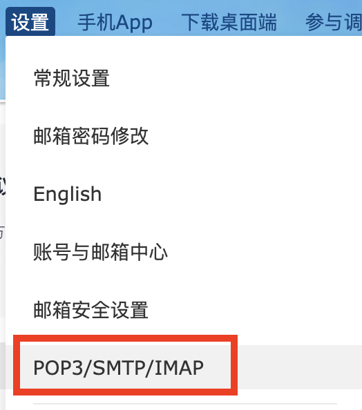
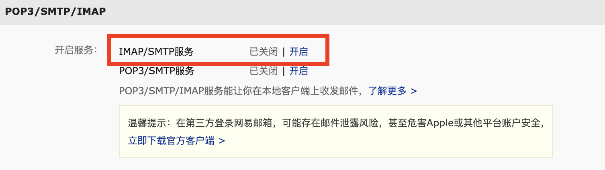
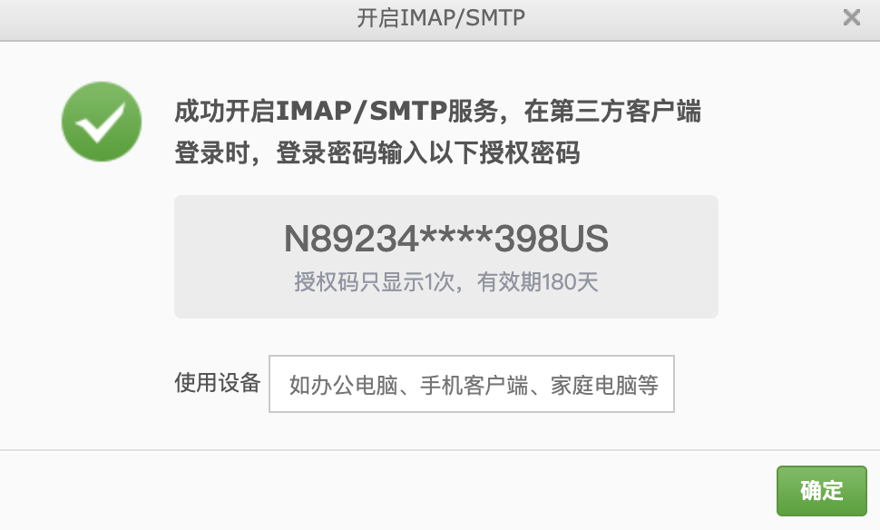
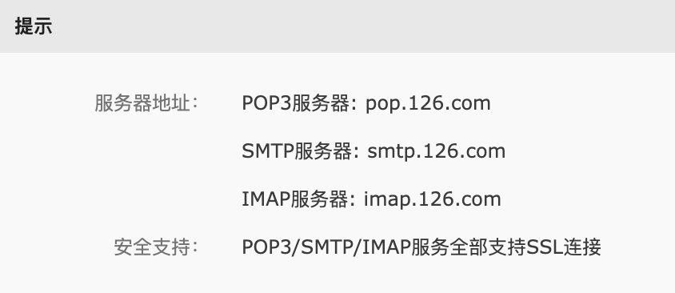

前言
在 Emacs 中接收邮件图个清净，毕竟广告实在是太多了。
IMAP/SMTP
要想在其它客户端上接收邮件需要开启 IMAP 服务。
首先登录 126 邮箱，在顶部找到设置并点击，在弹出的选项中选择 POP3/SMTP/IMAP

然后点击开启 IMAP/SMTP 服务

这时候会给你关联的手机发送一条短信验证，验证成功后显示授权码

授权码只显示一次，要保存好，后面登录都是用授权码，而不是登录密码。
如果忘记了只能删除，然后重新生成。
生成好后会显示服务器的地址，先记下后面配置的时候要用到。

安装
安装的时候要使用 ibsync 而不是 mbsync ，我没有打错。
配置
配置路径在 ~/.mbsyncrc
1
2
3
4
5
6
7
8
9
10
11
12
13
14
15
16
17
18
19
20
21
|
IMAPAccount 126
Host imap.126.com
User username@126.com
PassCmd "pass show email/126.com/username@126.com"
TLSType IMAPS
TLSVersions +1.2
IMAPStore 126-remote
Account 126
MaildirStore 126-local
SubFolders Verbatim
Path ~/Mail/126/
Inbox ~/Mail/126/Inbox/
Channel 126
Far :126-remote:
Near :126-local:
Patterns *
Create Both
Expunge Both
SyncState *
|
- IMAPAccount 是代表邮箱的名字，可以随便取，但是要注意和后面的保持一致
- Host 就是开启授权码后显示的服务器地址，这里只用到了 imap.126.com
- User 就是你的邮箱账号
- PassCmd 就是授权码，
PassCmd 如果是和我一样使用 pass 管理的只需要改后面的账号就行了。
使用 pass 的可以使用如下指令来保存授权码
1
|
pass insert email/126.com/username@126.com
|
如果不使用 pass 直接把授权码填到 PassCmd 中即可，不过不建议这样做，不安全。
同步邮件
配置好后就可以开始从 126 同步邮件到本地了，使用如下命令
mu
mbsync 的作用是把 126 同步到本地，如果还想在 Emacs 中使用还需要 mu 对邮件进行索引
安装好了需要初始化，然后开启索引
1
2
|
mu init -m ~/Mail --my-address username@126.com
mu index
|
Emacs 中的配置
1
2
3
4
5
6
7
8
9
10
11
12
13
14
15
16
17
18
19
20
21
22
|
(use-package mu4e
:ensure nil
:config
(setq mu4e-change-filenames-when-moving t)
(setq mu4e-get-mail-command "mbsync -a")
(setq mu4e-maildir "~/Mail"
mu4e-view-prefer-html t
mu4e-update-interval 180
mu4e-headers-auto-update t
mu4e-headers-date-format "%+4Y-%m-%d"
mu4e-compose-format-flowed t
mu4e-view-show-images t)
(setq mu4e-drafts-folder "/126/"草稿箱)
(setq mu4e-sent-folder "/126/已发送")
(setq mu4e-trash-folder "/126/已删除")
(setq mu4e-maildir-shortcuts . (("/126/Inbox" . ?i)
("/126/已发送" . ?s)
("/126/已删除" . ?t)
("/126/草稿箱" . ?d))))
|
配置好了按下 M-x 输入 mu4e 启动即可。
参考